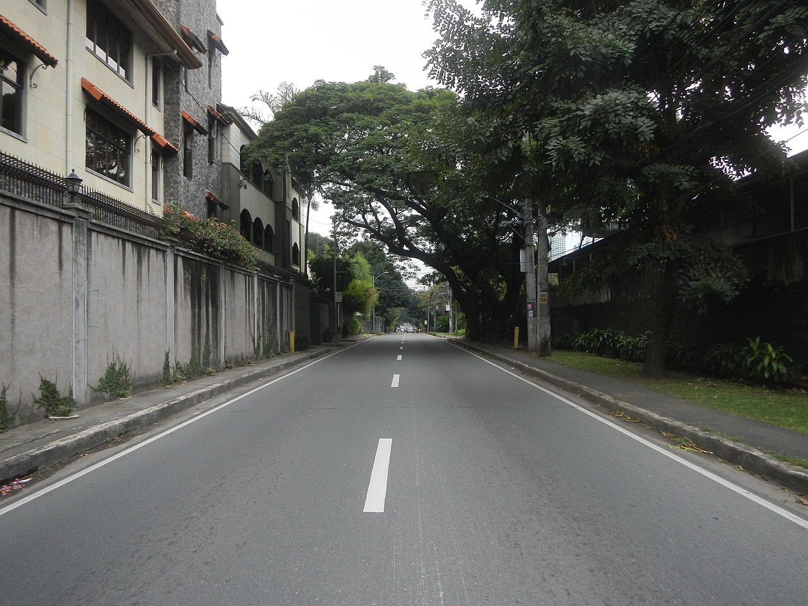
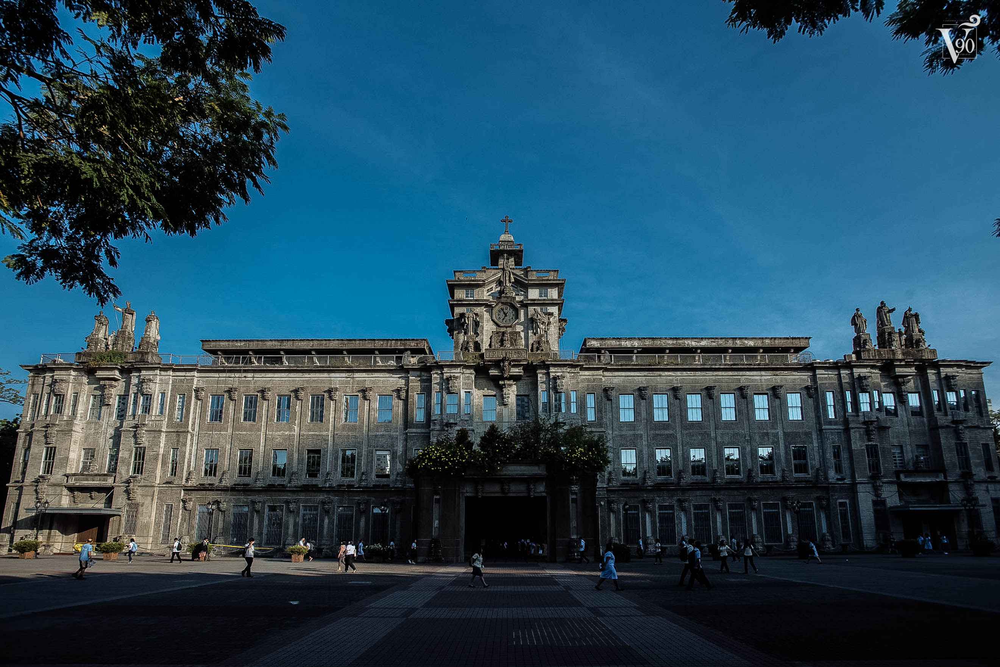
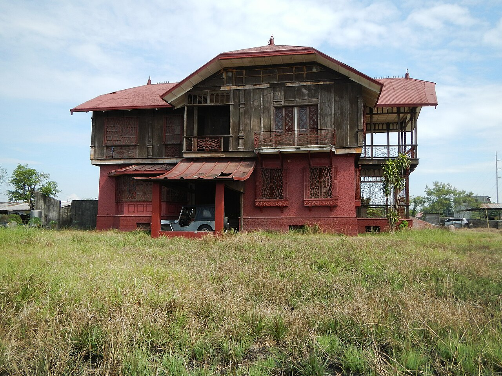

Explore the Mythical Areas of the Philippines
Balete Drive
Balete Drive, located in Quezon City, is infamous for its haunted reputation. Named after the balete trees lining the road, it is said to be haunted by a white lady. According to local lore, this ghostly figure appears to motorists, causing chills and eerie encounters. Balete Drive has become a popular destination for thrill-seekers and paranormal enthusiasts.
Mt. Banahaw

Mt. Banahaw, located on the border of Laguna and Quezon provinces, is considered a sacred mountain. It is revered by many religious sects and spiritual groups who believe it to be a portal to the divine. Mt. Banahaw is known for its mystical caves, healing springs, and rich biodiversity. Pilgrims and hikers alike visit to seek spiritual enlightenment and enjoy its natural beauty.
Biringan City
A mythical, invisible city said to exist on the island of Samar. Enchanting stories describe Biringan as a mystical realm inhabited by supernatural beings, luring the unsuspecting into their enchanting domain.
University of Santo Tomas, Manila
This historic university is said to be haunted by the spirits of internees from the Santo Tomas Internment Camp during World War II wherein many of the prisoners of war were "enemy aliens", mostly Americans, living in the Philippines. Many prisoners died of starvation, illness, and other causes. The university is also a witness to unlucky students resorting to suicide, such as the female ghost in one of the ladies' restrooms in the Main Building. Other reportedly haunted locations in the campus include Benavidez park and the Ossuarium in the medical building. Unsettling sightings and eerie experiences are part of its haunted lore. due to its long history that spans from the Spanish era.
Diplomat Hotel, Baguio

This abandoned hotel in Baguio is infamous for the ghost of a young girl named Elizabeth, who was murdered in the 1980s. Stories of paranormal sightings and eerie occurrences abound within its dilapidated walls. It is considered by paranormal believers to be haunted due to its brutal World War II history and call it as a "ghost magnet." Phantom Japanese soldiers, headless nuns, disembodied crying voices, moans and screams as well as apparitions in photographs taken within the property have been reported here.
Bahay na Pula, San Ildefonso, Bulacan
Known for its eerie atmosphere, this red-painted house is said to be haunted by the spirits of Japanese soldiers from World War II. Chilling tales of ghostly apparitions and strange noises give this place its notorious reputation.